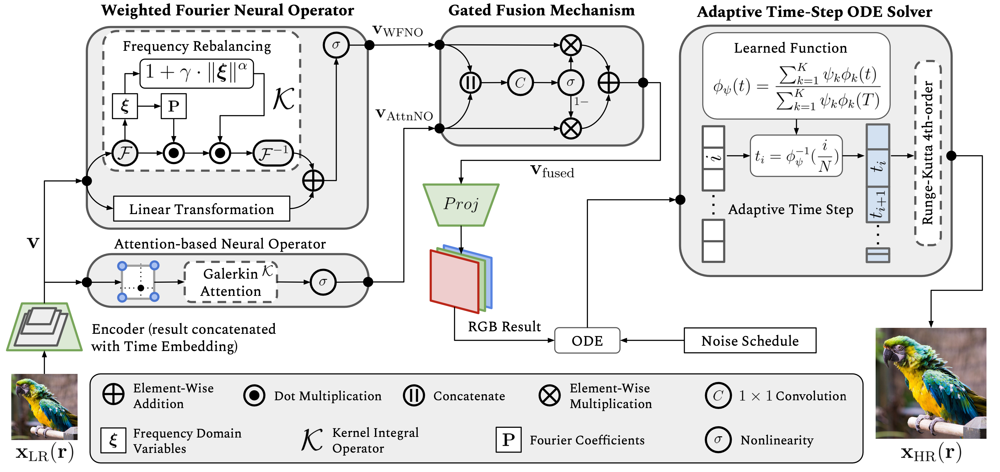

The DiffFNO Architecture
Architecture
WFNO + AttnNO + ATS ODE Solver
Qualitative

Sharper edges, richer textures
Xiaoyi Liu1, Hao Tang2
1Washington University in St. Louis | 2Peking University
We introduce DiffFNO, a novel diffusion framework for arbitrary‑scale super‑resolution strengthened by a Weighted Fourier Neural Operator (WFNO). Mode Rebalancing in WFNO effectively captures critical frequency components, significantly improving the reconstruction of high‑frequency image details. Gated Fusion Mechanism (GFM) adaptively complements WFNO’s spectral features with spatial features from an Attention-based Neural Operator (AttnNO). Adaptive Time‑Step (ATS) ODE solver accelerates inference without sacrificing output quality. Extensive experiments demonstrate that DiffFNO achieves state‑of‑the‑art results, outperforming existing methods by 2–4 dB in PSNR across various scaling factors and generalizing beyond training distributions—all at competitive inference times.
WFNO + AttnNO + ATS ODE Solver
Sharper edges, richer textures
Table: PSNR/SSIM on DIV2K validation set across scales ×2–×12.
@inproceedings{liu2025difffno,
title = {DiffFNO: Diffusion Fourier Neural Operator},
author = {Liu, Xiaoyi and Tang, Hao},
booktitle = {CVPR},
year = {2025},
}